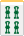
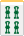

ソニー麻雀と云っても、あの大企業とは何の関係もない。「麻雀クイズ（日本文芸社 s42 手塚 晴夫)」という本で紹介されているゲーム。それも単なる変則麻雀ではなく、いわば麻雀脳を鍛えるブートキャンプ ゲーム(^-^；
普通の麻雀では手牌は13枚、しかしソニー麻雀の手牌は12枚。それをソニー麻雀と呼称するは、ソニーの“ ソ ”は十の和語読み（三十路と書いて“みそじ”と読むたぐい）、“ ニ ”は漢語系読みで “ 二 ”。つまり１２でソニーと読ませる。
手牌12枚となると、１枚不足する。その不足している１枚は、オールマイティ牌として頭の中に存在させる。「麻雀クイズ」には そのように記述されているが、存在しない牌を常に脳裏にうかべてゲームするというのは ちと大変。実際 チーポンして手牌が９枚とか６枚になると、なんだか少牌している感じになる。そこで
ここでは13枚めのオールマイティ牌として花牌を使用することにする。
まずゲームに先立ち、各プレーヤーはオールマイテイ牌として花牌を１枚づつ持つ。次に東家から順に、通常通り３回づつ取牌したところで配牌終了（すでに手牌を１枚 持っているので最後のチョンは行わない。東家もチョンチョンは行ない）。配牌のあと、東家は第１ツモを行ない、通常通りゲーム開始。実力養成ゲームなので、ルールは二の次。自分たちの慣れたルールでプレーすればノープロブレム。
オールマイティ牌が１枚あるので イーシャンテン＝テンパイとなる。当然 通常よりテンパイが早くなる。それだけでなく、テンパイしたときもマチが非常に多くなる。仮に手牌が
           
となっていれば、マチは う〜んと う〜んと...
    
なんて形になったりすれば、もう頭くらくら... うっかりすると フリテン続出。そこで最初のうちは 摸打にそれなりに時間がかかってもＯＫとする。あくまで麻雀脳を鍛えるのが目的なので、フリテンロンなどには厳罰を加える（笑） しかしワケワカメになったからと云って、「えい、こんなもの いらねぇ」とばかりオールマイティ牌を切ってしまうのは厳禁。どんなテンパイになってもフリテンになるが、ツモアガリすればいいと言う問題ではない。それではソニー麻雀をやる意味がない（笑）
もし 手牌13枚では あまりにもオタオタするというのであれば、最初は手牌10枚のショート麻雀でプレーしても良い。この場合、配牌は各プレーヤーは２トン（上下２枚２組），２トン，１トン（上下２枚１組）と取得する。
|